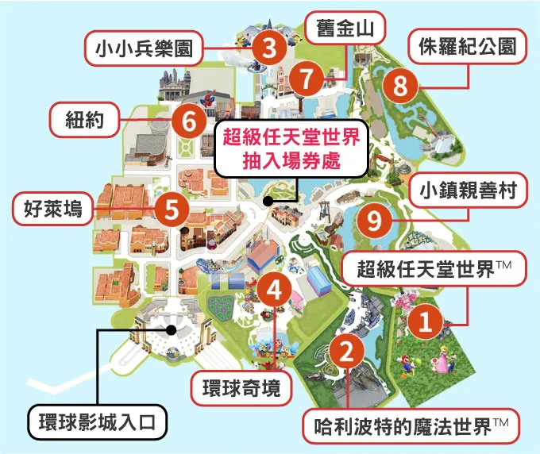

日本關西 · 飛驒高山 · 名古屋自由行
📅 旅遊日期：2026/11/07 (六) ～ 2026/11/14 (六)

快樂出遊小夥伴合照
一、航班資訊 (Flight Details)
07:00 起飛
10:25 抵達
13:15 起飛
15:50 抵達
⚠️ 報到提醒：去程務必於 04:30～05:00 抵達桃園 T1 櫃檯；回程請於 10:45～11:15 抵達名古屋中部機場櫃檯。
三、11月上旬氣候特點與穿搭建議
平地都市（大阪 / 名古屋）
白天約 14°C~18°C，早晚約 9°C~12°C。體感涼爽舒適，早晚溫差大，建議採洋蔥式穿法，內搭長袖或薄毛衣，外加保暖外套。
山區景點（高山 / 白川鄉 / 新穗高）
白天約 8°C~13°C，早晚可能降至 0°C~4°C。山區風大且體感偏冷，有初雪機率！必備防風羽絨外套、手套、毛帽與圍巾。
四、行前準備互動檢查清單 (Checklist)
重要證件與財務
交通與票券
通訊與電子裝備
個人生活用品
2026/11/07 (六) 大阪抵達 · 心齋橋 & 難波漫遊
飯店與車站地鐵指引：
• 位於心齋橋站與難波站西側。經站內 B1 地下通道：御堂筋線/千日前線「難波站」25號出口步行4分鐘（大行李走 15-B 出口電梯）；四橋線「難波站」26-C 出口步行4分鐘。
第一航廈辦理報到手續。
桃園國際機場 T1 ✈ 關西國際機場 T1（預計 10:25 抵達）。
抵達後至 2 樓搭乘『空港急行』前往南海難波站，車資約 ¥970，車程約 47 分鐘。
參觀 12 公尺高巨大獅子殿祈求勝運；漫步法善寺橫丁向『水掛不動尊』淋水祈福。
與固力果跑跑人 (Glico Man) 合照，展開藥妝與特色店家血拼！
Day 1 推薦購物地圖、餐廳與超市
平價義大利餐廳 / 午餐推薦
17:00 預約 / 人氣和牛燒肉吃到飽
3Coins/GU/UNIQLO/扭蛋機
mont-bell 戶外用品
熱門平價百貨
逛街購物必訪重點
固力果跑跑人 / 美食地標
巨大獅子殿祈求勝運
水掛不動尊祈福
10:00-19:00 ｜ 步行約5-6分鐘 ｜ 大包裝零食、調味料、在地食材與飲料極便宜
09:00-24:00 ｜ 步行約7-8分鐘 ｜ 大型旗艦超市、熟食/壽司/便當極豐富、水果新鮮，設有免稅櫃檯(至21:30)
24小時營業 ｜ 步行約10-12分鐘 ｜ 24小時不打烊！適合深夜採買宵夜，販售生鮮、熟食及 Topvalu 高 CP 值自有品牌
24小時營業 ｜ 步行約12分鐘 ｜ 大阪在地平價象徵，24小時營業！飲料、泡麵、零食價格極低，適合深夜補貨
2026/11/08 (日) 勝尾寺達摩祈福 ➔ 大阪城巡禮
晨間出門提醒 (預計 08:01 搭車)：
建議最晚 07:40 從 APA 飯店出門，於 07:50 前抵達月台等候 08:01 御堂筋線電車。早餐可在超商買現烤三明治或吉野家/松屋享用。
| 時間 | 地點 / 項目 | 詳細內容與路線 | 備註 / 票價 |
|---|---|---|---|
| 07:00 - 07:40 | 飯店 / 早餐 | 享用早餐，07:40 準時出門前往車站。 | 預留15分進站 |
| 08:01 - 08:36 | 難波站 ➔ 箕面萱野站 | 搭乘 Osaka Metro 御堂筋線（直通北大阪急行電鐵）直達終點站。 | 車資 530 日圓 |
| 09:00 - 09:22 | 箕面萱野 ➔ 勝尾寺 | 站外 8 號/6 號公車站搭乘 30 號公車（計程車約 ¥3,500）。 | 公車單程 800 日圓 |
| 09:30 - 11:30 | ⛩ 勝尾寺 | 參觀祈求勝運與學業著名的勝尾寺，滿山滿谷達摩景觀（可線上預訂門票免排隊）。 | 門票 500 日圓 |
| 12:15 - 13:40 | Q's Mall (箕面萱野) | 搭乘 30 號公車返回，於站旁 Q's Mall 大型商場享用中餐與休息。 | 美食街選擇豐富 |
| 13:45 - 14:25 | 箕面萱野 ➔ 大阪城 | 御堂筋線至「本町站」，轉乘中央線至「森之宮站」或「谷町四丁目站」。 | 車資約 530 日圓 |
| 14:30 - 17:30 | 🏯 大阪城天守閣 | 參觀大阪城公園、天守閣展望台、豐臣秀吉歷史文物及豐臣石垣館展示。 | 門票 1,200 日圓 |
| 17:30 - 19:30 | 梅田商圈 (彈性行程) | 若有體力可逛梅田：Gachagacha之森扭蛋、ROUND1夾娃娃、寶可夢中心。 | 自由安排 |
2026/11/09 (一) 日本環球影城 USJ 一整天！
今日全天獻給關西最強主題樂園！請提前購買門票與快速通關，穿著最舒適的運動鞋，享受瑪利歐賽車、哈利波特禁忌之旅與精彩遊行！
路線：大阪難波站 (阪神難波線) 往尼崎 ➔ 西九條站 ➔ (JR 櫻島線) ➔ 環球城站
詳細內容：第一班電車出發排隊去！月台搭乘任一台往尼崎、神戶、明石、姬路方向的阪神電車。
/ 車程 27 分鐘
環球影城通常會比官方公告時間「提早 1 小時以上」開園。搭乘首班車約 05:51 抵達後，請立刻跟隨人流前往大門口安檢處卡位排隊，爭取第一批入園免提早抽整理券卡進超級瑪利歐世界！
環球影城快捷導覽地圖 & 園區分區對照

入園後請立即打開官方 APP 線上抽取「超級任天堂世界」的保證入場券（整理券），或前往地圖中央的【超級任天堂世界抽入場券處】機台辦理。
2026/11/10 (二) 大阪 ➔ 名古屋 ➔ 飛驒高山老街
辦理大阪退房手續，攜帶行李出發前往地鐵站。
搭乘 Osaka Metro 御堂筋線（往千里中央方向，難波 M13 ➔ 新大阪 M20）。
/ 車程 15 分鐘
於新大阪站內便利商店或站內便當店採買早餐與熱飲。
搭乘新幹線 **Nozomi 236 號**（07:15 新大阪發車 ➔ 08:04 抵達名古屋）。
/ 車資 7,700 日圓 / 50 分鐘
至 JR 名古屋新幹線出口名鐵高速巴士站，搭乘 **13308 班次** 直達高山飯店/車站。
/ 車資 3,600 日圓 / 2 小時 50 分
參觀高山陣屋 (門票¥500)，漫步飛驒小京都黑木造町家。提醒：店家約 16:00 起打烊，建議提早前往！
飛驒高山老街必吃美食清單與景點 MAP
2026/11/11 (三) 宮川朝市 ➔ 新穗高雙層纜車
漫步宮川沿岸體驗特色朝市攤位與在地手工藝品。
5 號月台搭乘平湯・新穗高線直達新穗高纜車站。
搭乘日本唯一雙層纜車登上海拔 2,156m 展望台，享受 360 度北阿爾卑斯山脈雪景。
2026/11/12 (四) 白川鄉合掌村半日遊 ➔ 名古屋
高山 ➔ 合掌村 (班次0041)
座位：5B, 5A, 6B, 6A, 7B, 7A
合掌村 ➔ 高山 (班次0102)
座位：5B, 5A, 6B, 6A, 7B, 7A
高山 ➔ 名古屋 (班次13215 1號車)
座位：04A~07B
合掌村重點景點與隨興美食
- 展望台俯瞰：城山天守閣 / 荻町城跡展望台 (接駁車單程¥300)。
- 合掌造內部：和田家 (門票¥400)、神田家 (門票¥400)、明善寺。
- 人氣咖啡與小吃：喫茶落人紅豆湯圓、忠兵衛三小屋、飛驒牛串燒。
🍱 晚餐特別推薦：矢場味噌豬排 (矢場とん)
抵達名古屋後享用黑味噌炸豬排！推薦招牌：鐵板味噌里肌豬排定食、草鞋雙味豬排。門市可選名鐵店 (名鐵百貨9F) 或 ESCA 地下街店。
Day 7 行程：國寶犬山城、名古屋城與大須商圈
2026/11/13 (五) ｜ 宿：APA名古屋站前南| 時間 | 地點 / 項目 | 詳細內容與路線 | 備註 / 交通票券 |
|---|---|---|---|
| 06:30 - 07:30 | 飯店早餐 | 於 APA Hotel 1 樓餐廳享用豐富早餐，補充精力。 | 飯店內用餐 |
| 07:40 - 08:30 | 名古屋 ➔ 犬山遊園站 | 購買『犬山城下町套票』搭乘名鐵特急直達犬山遊園站。 | 套票 ¥1,950 (含車票+門票+優惠券) |
| 09:00 - 12:30 | 🏯 國寶犬山城 & 城下町 | 登上日本現存最古老木造天守閣、三光稻荷神社洗錢祈福、城下町散策。 | 門票已含在套票內 |
| 13:40 - 16:00 | 🏯 名古屋城 & 本丸御殿 | 參觀名古屋城天守閣外觀、金碧輝煌的『本丸御殿』與金鯱橫丁。 | 門票 ¥500 地鐵單程 ¥240 |
| 16:20 - 19:00 | 🛍️ 大須觀音 & 大須商店街 | 參拜大須觀音寺，漫步廣大商店街體驗古著、動漫雜貨與美味小吃。 | 地鐵單程 ¥210 |
| 19:30~ | 晚餐與賣場採買 | 返回 APA 休息，可至周邊 MaxValu 超市或唐吉訶德逛街補貨。 | 宿名古屋APA |
現存最古老木造天守
洗錢祈福與心形繪馬
金鯱與金碧輝煌御殿
古著、小吃與動漫雜貨
24H 營業 ｜ 步行約7-8分鐘 ｜ 24小時大型生鮮超市！生鮮熟食、飲料泡麵齊全，深夜補貨採買第一首選
07:30-22:00 ｜ 步行約5-6分鐘 (車站內) ｜ 進口食品、高質感零食、熟食起司及精緻甜點，適合選購高品質伴手禮
08:00-01:00 ｜ 步行約6-7分鐘 ｜ 大型綜合折扣店，藥妝、零食、電器、雜貨一應俱全，設有免稅服務
24H 營業 ｜ 步行約2-3分鐘 ｜ 24小時便利超商，緊鄰飯店，方便隨時補充飲料、零食、炸物與提款
2026/11/14 (六) 名古屋 ➔ 中部國際機場 (NGO) ✈ 台灣桃園 (TPE)
回程機場報到與退房提醒：
• 班機預計 13:15 起飛，務必於 10:45～11:15 前抵達中部國際機場 T1 辦理報到手續與託運行李。
• 早上預留時間整理大件行李，確認護照、隨身物品與伴手禮皆妥善打包。
於 APA Hotel Nagoya Ekimae Minami 享用自助早餐，辦理退房手續並提取行李。
從飯店步行前往名鐵名古屋站（約 5~8 分鐘）。
搭乘名鐵特急 / μ-SKY (μSKY 特急約 28 分鐘，一般特急約 37 分鐘到達）。車資約 ¥890~¥1,250。
抵達中部國際機場 T1！可先至蝦餅名店【坂角總本鋪】或蝦餅專賣店採購，並逛逛免稅店。
前往台灣虎航 IT207 報到櫃檯辦理登機證與安檢通關。
中部國際機場 (NGO) ✈ 桃園國際機場 (TPE)，預計 15:50 平安抵達台灣，結束美好關西高山之旅！
中部國際機場 (NGO) 必買伴手禮推薦
名古屋超強必買百年蝦餅，濃郁海味鹹香脆口。
超可愛青蛙造型饅頭，還有傳統 Q 彈外郎餅。
名古屋特有紅豆奶油吐司風味轉換成的精緻餅乾禮盒。
全行程 Google MAP 地圖快速連結庫
點擊以下任一地標即可直接啟動手機或電腦的 Google Maps 導航！